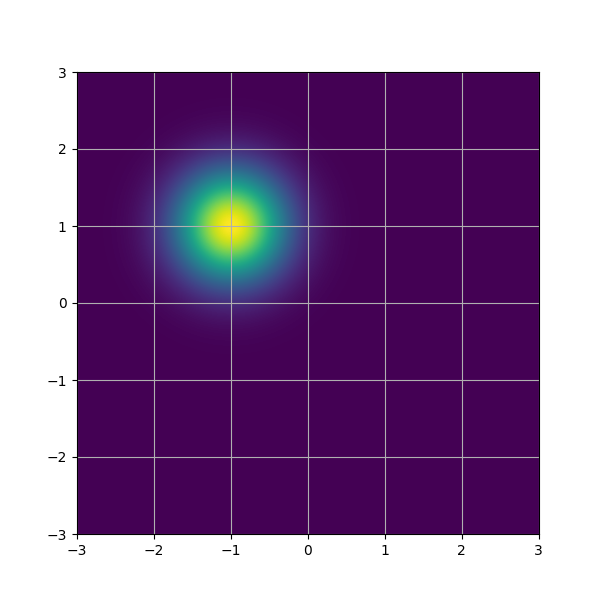
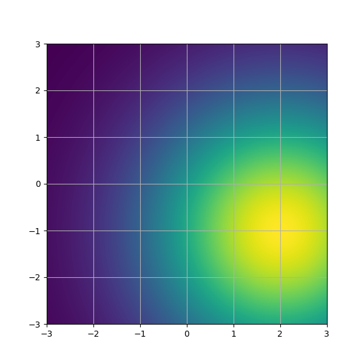
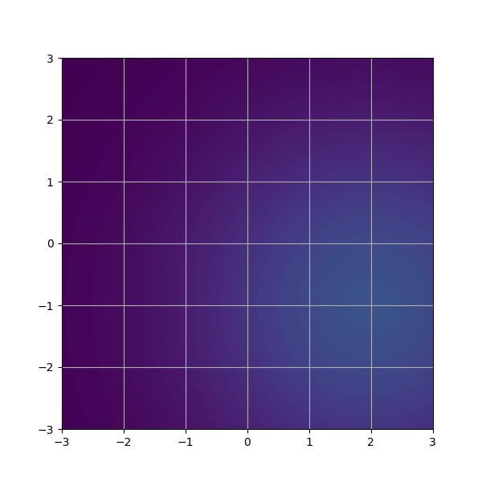

\(
\def\sc#1{\dosc#1\csod}
\def\dosc#1#2\csod{{\rm #1{\small #2}}}
\newcommand{\dee}{\mathrm{d}}
\newcommand{\Dee}{\mathrm{D}}
\newcommand{\In}{\mathrm{in}}
\newcommand{\Out}{\mathrm{out}}
\newcommand{\pdf}{\mathrm{pdf}}
\newcommand{\Cov}{\mathrm{Cov}}
\newcommand{\Var}{\mathrm{Var}}
\newcommand{\ve}[1]{\mathbf{#1}}
\newcommand{\ves}[1]{\boldsymbol{#1}}
\newcommand{\mrm}[1]{\mathrm{#1}}
\newcommand{\etal}{{et~al.}}
\newcommand{\sphere}{\mathbb{S}^2}
\newcommand{\modeint}{\mathcal{M}}
\newcommand{\azimint}{\mathcal{N}}
\newcommand{\ra}{\rightarrow}
\newcommand{\mcal}[1]{\mathcal{#1}}
\newcommand{\X}{\mathcal{X}}
\newcommand{\Y}{\mathcal{Y}}
\newcommand{\Z}{\mathcal{Z}}
\newcommand{\x}{\mathbf{x}}
\newcommand{\y}{\mathbf{y}}
\newcommand{\z}{\mathbf{z}}
\newcommand{\tr}{\mathrm{tr}}
\newcommand{\sgn}{\mathrm{sgn}}
\newcommand{\diag}{\mathrm{diag}}
\newcommand{\Real}{\mathbb{R}}
\newcommand{\sseq}{\subseteq}
\newcommand{\ov}[1]{\overline{#1}}
\DeclareMathOperator*{\argmax}{arg\,max}
\DeclareMathOperator*{\argmin}{arg\,min}
\newcommand{\data}{\mathrm{data}}
\newcommand{\N}{\mathcal{N}}
\newcommand{\Hil}{\mathcal{H}}
\)
Gaussian Distributions
We work a lot with Gaussian distribution:
$$ p(x) = \mcal{N}(x;\mu,\Sigma) = \frac{ \exp(-\frac{1}{2}(x-\mu)^T \Sigma^{-1} (x-\mu)) }{(2\pi)^{d/2} (\det \Sigma)^{1/2}}$$
where $\mu \in \Real^d$ is called the mean, and $\Sigma \in \Real^{d \times d}$ is a positive definite called the covariance matrix.
We use the symbol $\mcal{N}(\mu,\sigma^2I)$ to refer the distribution when calculation with the input $x$ is not needed.
In this talk, the Gaussian will always be isotropic. This means that $\Sigma = \sigma^2 I$ for some constant $\sigma > 0$. So, $$ p(x) = \mcal{N}(x;\mu,\sigma^2I) = \frac{1}{(2\pi)^{d/2} \sigma^d} \exp \bigg( \frac{-\| x-\mu \|^2}{2\sigma^2} \bigg).$$ The constant $\sigma$ is called the standard deviation.
Here's some visualization of some isotropic Gaussians.
| Distribution |
Visualization
(Each image its own scale) |
Visualization
(All images in the same scale) |
| $$ \mcal{N}(0, I)$$ |
 |
 |
| $$ \mcal{N}((-1,1), 0.5^2I)$$ |
 |
|
| $$ \mcal{N}((2,-1), 2^2I)$$ |
 |
 |
[<<]
[Top]
[>>]